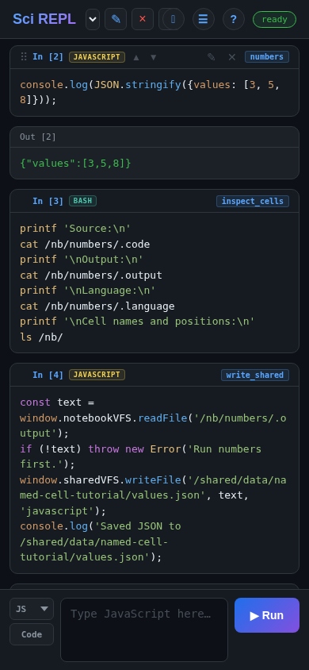
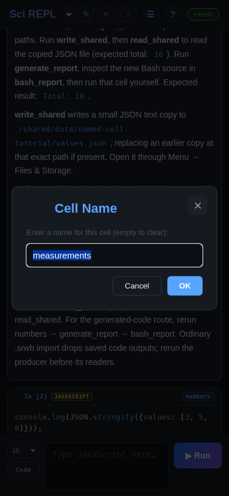
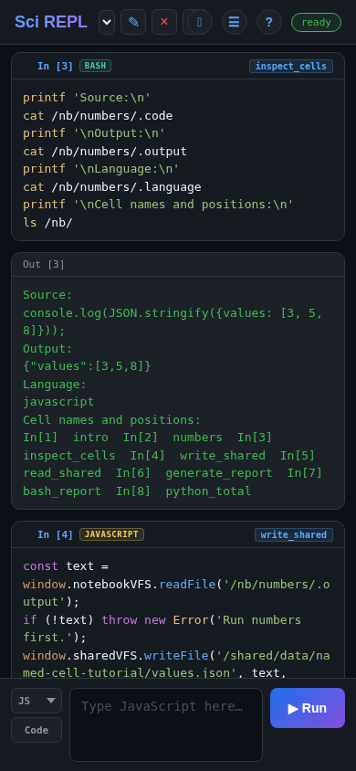
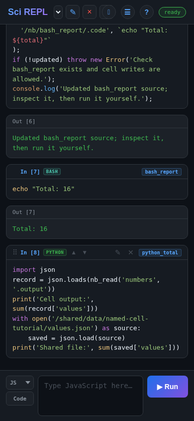

करके सीखें
सेलों को नाम दें और प्रोग्राम कनेक्ट करें
किसी सेल का केवल उसकी स्थिति से पहचाने जाने के बजाय numbers जैसा कोई उपयोगी नाम हो सकता है। अन्य सेल /nb/numbers/.output के ज़रिए उसका नवीनतम टेक्स्ट आउटपुट पढ़ सकते हैं, या /shared/ में एक सामान्य फ़ाइल के ज़रिए डेटा का आदान-प्रदान कर सकते हैं। JavaScript और Bash के साथ दोनों तरीकों को आज़माएं, फिर किसी अन्य सेल में एक छोटा Bash प्रोग्राम जनरेट करें—जनरेट किए गए कोड को स्वचालित रूप से चलाए बिना।
इस वॉकथ्रू और स्क्रीनशॉट की जांच SciREPL Free ब्राउज़र बिल्ड में को की गई थी। ये संकीर्ण ब्राउज़र के पूर्ण कैप्चर हैं, एंड्रॉइड स्क्रीनशॉट नहीं। इस गाइड के लिए Pro और हर रिलीज़ किए गए वर्ज़न की जांच नहीं की गई है। मुख्य अभ्यास में बंडल किए गए JavaScript और Bash का उपयोग होता है: किसी पैकेज, मॉडल कॉल या रनटाइम डाउनलोड की आवश्यकता नहीं है। Python एक वैकल्पिक अंतिम चरण है।
यहाँ “पाथ” का क्या अर्थ है: /nb/ प्रोग्रामों के लिए उपलब्ध, वर्तमान में चयनित वर्कबुक के सेलों का एक वर्चुअल व्यू है। यह एंड्रॉइड के डाउनलोड में कोई फ़ोल्डर नहीं है, और यह कोई अलग “Path View” स्क्रीन नहीं है। जाँचे गए Free वर्ज़न की फ़ाइलें और संग्रहण स्क्रीन /nb/ को ब्राउज़ नहीं करती है; बाद में हम जानबूझकर कुछ डेटा को एक साझा फ़ाइल में कॉपी करते हैं जिसे स्क्रीन दिखा सकती है।
चरण 1
उदाहरण को चलाए बिना इम्पोर्ट करें
- नेम्ड-सेल उदाहरण वर्कबुक (.srwb) डाउनलोड करें। फ़ाइल को सहेजें और इसका
.srwbएक्सटेंशन बनाए रखें। यदि ब्राउज़र टेक्स्ट दिखाता है, तो इसकी सेव/डाउनलोड क्रिया का उपयोग करें। - SciREPL के शीर्ष हेडर में, ☰ Menu ढूंढें—तीन क्षैतिज रेखाओं वाला बटन। इसे खोलें और 📂 फ़ाइल आयात करें (उदा. .srwb, .ipynb, .csv, .py, .zip) चुनें। यदि आवश्यक हो तो मेनू के अंदर स्क्रॉल करें।
- अपने डिवाइस के फ़ाइल पिकर में
named-cell-interop.srwbचुनें। यदि मेनू खुला रहता है तो उससे बाहर निकलें, फिर वर्कबुक चयनकर्ता में नया Named Cell Interop टैब चुनें। चयनकर्ता का ▾ तीर ऐप शीर्षक के पास है। आपकी मौजूदा वर्कबुक बनी रहेंगी। - परिचय पढ़ें, फिर
numbers,inspect_cells,write_shared,read_shared,generate_report,bash_reportऔरpython_totalनाम वाले सात कोड सेलों को ढूंढें। उन्हें पहले से ही नाम दिया गया है ताकि आप अभ्यास का अनुसरण कर सकें।
इम्पोर्ट करना रन करना नहीं है। सामान्य .srwb इम्पोर्ट कोड को निष्पादित नहीं करता है, भले ही ऑटो-एग्ज़ीक्यूट सक्षम हो। इस पाठ के लिए Run All Cells न चुनें: क्रम महत्वपूर्ण है, और अंतिम Python सेल वैकल्पिक है। अपरिचित कोड को चलाने से पहले उसका निरीक्षण करें।
डाउनलोड और पिकर चरणों को अधिक विस्तार से जानना चाहते हैं? मैनुअल वर्कबुक इम्पोर्ट वॉकथ्रू का उपयोग करें। इस पाठ का अनुसरण करने के लिए, Named Cell Interop को चयनित रखें: /nb/ सक्रिय वर्कबुक को संदर्भित करता है, प्रत्येक खुले टैब को नहीं।
चरण 2
सेल का नाम ढूंढें और बदलें
सहेजे गए कोड सेल के अपने हेडर में एक In[…] प्रॉम्प्ट लेबल होता है, और नेम्ड सेल अपना नाम भी दिखाता है। नामकरण के लिए उपयोग किया जाने वाला यह लेबल है—✎ पेंसिल नहीं, जो सेल के सोर्स को संपादित करती है। प्रदर्शित संख्या सहेजे गए कार्ड की पहचान करती है; पुन: व्यवस्थित करने के बाद, यह आवश्यक नहीं है कि यह /nb/In[N]/... पाथ में सेल की वर्तमान स्थिति से मेल खाए। संदर्भों के लिए नामों को प्राथमिकता दें।

numbers दाईं ओर दिखाई देता है। यह ब्राउज़र कैप्चर चरण 3 के बाद का आउटपुट दिखाता है; डेस्कटॉप पर, इसके नियंत्रणों को प्रकट करने के लिए कार्ड पर होवर करें।numbersढूंढें। डेस्कटॉप पर, इसके In[…] लेबल पर डबल-क्लिक करें। टच डिवाइस पर, उस लेबल को दबाकर रखें। जाँचे गए बिल्ड में सिंगल क्लिक नामकरण का जेस्चर नहीं है।- डायलॉग में,
numbersकोmeasurementsसे बदलें, फिर ठीक है से पुष्टि करें। सेल हेडर में नाम बदल जाता है; सोर्स और भाषा नहीं बदलते। - वही डायलॉग फिर से खोलें और नाम वापस
numbersमें बदलें, फिर ठीक है चुनें। अगले सेल उस नाम का उपयोग करते हैं, इसलिए जारी रखने से पहले इसे पुनर्स्थापित करें।

/nb/numbers/.output को भी बदलना होगा।विशिष्ट, सरल नाम चुनें जैसे कि cube_moves या check_moves। नाम वर्कबुक के अंदर अद्वितीय होने चाहिए; उनमें / नहीं हो सकता, वे . से शुरू नहीं हो सकते, या In[2] जैसा कोई आरक्षित स्थितीय लेबल नहीं हो सकते। नाम को खाली करने से वह हट जाता है।
यही कारण है कि कोई ट्यूटोरियल कह सकता है “cube_moves चलाएं, फिर check_moves”: वे वर्कबुक में ढूंढने के लिए सेल नाम हैं, ऐसी फ़ाइलें नहीं जिन्हें आपको अलग से डाउनलोड करना होगा। जब आप सेल सम्मिलित करते हैं या स्थानांतरित करते हैं, तो स्थितियों की तुलना में नाम बेहतर संदर्भ होते हैं।
चरण 3
डेटा उत्पन्न करने वाले सेल को चलाएं
numbers ढूंढें। इसकी अपनी ✎ पेंसिल पर टैप करें, सोर्स का निरीक्षण करें, और जांचें कि सेल कोड → JS - JavaScript है। फिर उस सहेजे गए सेल के ▶ चलाएं बटन का उपयोग करें—नए-सेल पैनल का नहीं, जो एक और सेल जोड़ता है।
Pro शॉर्टकट: आप सहेजे गए सेल का एडिटर सेल के सोर्स टेक्स्ट पर डबल-टैप करके भी Pro में खोल सकते हैं। ✎ पेंसिल दोनों संस्करणों में काम करती है। यह संपादन शॉर्टकट नाम बदलने के लिए In[…] लेबल पर डबल-क्लिक करने या देर तक दबाने से अलग है।
console.log(JSON.stringify({values: [3, 5, 8]}));इस एक-पंक्ति आउटपुट की अपेक्षा करें:
{"values":[3,5,8]}परिणाम JSON टेक्स्ट है। इसकी संरचना किसी सामान्य संदेश की तुलना में किसी अन्य भाषा के लिए इसे पढ़ना आसान बनाती है। हम कोई लाइव JavaScript ऑब्जेक्ट पास नहीं कर रहे हैं और न ही JavaScript वेरिएबल्स को Bash या Python के साथ साझा कर रहे हैं।
चरण 4
वर्चुअल फ़ाइल सिस्टम के माध्यम से सेल पढ़ें
numbers की वर्चुअल डायरेक्टरी में डॉट-प्रीफ़िक्स्ड प्रॉपर्टीज़ हैं। एक पाथ वर्कबुक माउंट, सेल पहचानकर्ता और आपकी इच्छित प्रॉपर्टी को जोड़ता है:
/nb/ current workbook's cells
└── numbers/ this named cell
├── .code source text
├── .output latest text output
├── .language javascript
├── .type code
└── .name numbers| प्रॉपर्टी | इसे पढ़ने से आपको क्या मिलता है |
|---|---|
.code | वर्तमान सोर्स, चाहे वह सोर्स चला हो या नहीं। |
.output | अंतिम टेक्स्ट आउटपुट। यह केवल-पढ़ने योग्य (रीड-ओनली) है: निष्पादन इसे प्रदान करता है। यह खाली या पुराना हो सकता है। |
.language | संग्रहीत भाषा पहचानकर्ता, जैसे कि javascript या bash। |
.type | सेल का प्रकार, जैसे कि code या markdown। |
.name | असाइन किया गया नाम, या यदि सेल का कोई नाम नहीं है तो खाली टेक्स्ट। |
अब ✎ पेंसिल खोलें inspect_cells पर, कोड → Bash जांचें, और इसे चलाएं। यह निर्माता के सोर्स, इसके JSON आउटपुट और इसकी भाषा को पढ़ता है, फिर वर्तमान वर्कबुक के सेल पहचानकर्ताओं को सूचीबद्ध करता है। यह किसी भी सेल या फ़ाइल को लिखता या बदलता नहीं है।
printf 'Source:\n'
cat /nb/numbers/.code
printf '\nOutput:\n'
cat /nb/numbers/.output
printf '\nLanguage:\n'
cat /nb/numbers/.language
printf '\nCell names and positions:\n'
ls /nb/
cat पाथ के साथ सेल की प्रॉपर्टीज़ पढ़ता है। ये पाथ वर्कबुक डेटा को संबोधित करते हैं; इसमें कोई एंड्रॉइड शेल या भौतिक फ़ोन फ़ोल्डर शामिल नहीं है। SciREPL Free का ब्राउज़र कैप्चर।नाम, स्थितियां और सापेक्ष संदर्भ
उसी सेल को उसकी वर्तमान 1-आधारित स्थिति से भी संबोधित किया जा सकता है, उदाहरण के लिए /nb/In[2]/.output का अर्थ वर्तमान क्रम में दूसरा सेल है। Markdown सेलों को भी गिनें। यह कोई स्थायी कार्ड आईडी नहीं है: पुन: व्यवस्थित करने के बाद, मुद्रित In[…] संख्या इस पाथ द्वारा उपयोग की जाने वाली स्थिति से भिन्न हो सकती है। जब आप सेलों को पुन: व्यवस्थित या सम्मिलित करते हैं, तो स्थिति संदर्भों का अर्थ बदल जाता है; नाम संदर्भ नेम्ड सेल की पहचान बनाए रखते हैं।
Bash और JavaScript निष्पादित होने वाले सेल के सापेक्ष संदर्भों का भी समर्थन करते हैं: /nb/-1/.output का अर्थ पिछला सेल है, और /nb/./.code का अर्थ वर्तमान सेल है। उन्हें निष्पादन संदर्भ की आवश्यकता होती है और वे सेल क्रम पर निर्भर करते हैं। यह ट्यूटोरियल इसके बजाय स्पष्ट नामों का उपयोग करता है; यह प्रत्येक भाषा में समान रूप से व्यवहार करने वाले सापेक्ष संदर्भों पर निर्भर नहीं करता है।
चरण 6
किसी अन्य सेल का कोड जनरेट करें, फिर उसे खुद चलाएं
अब तक Bash ने JavaScript आउटपुट को पढ़ा है। अब JavaScript कुल की गणना करने के लिए उसी JSON टेक्स्ट का उपयोग करेगा, और एक संक्षिप्त Bash प्रोग्राम लिखेगा मौजूदा bash_report सेल में। कोड लिखना और कोड चलाना दो अलग क्रियाएं हैं।
numbersचलाएं → JSON टेक्स्टgenerate_reportJSON पढ़ें → Bash सोर्स लिखेंbash_reportनिरीक्षण करें → मैन्युअल रूप से चलाएं
यह लेखन सोर्स को बदल देता है। कंपैनियन के स्क्रैच bash_report सेल का उपयोग करें, उस सेल का नहीं जिसका काम आपको रखना है। अपनी वर्कबुक में सोर्स लिखने का प्रयास करने से पहले बैकअप बना लें। इस अभ्यास में जनरेटर को स्वयं ओवरराइट न करें या प्रोग्रामेटिक रूप से .language को न बदलें।
- जांचें कि
bash_reportमौजूद है और इसकी भाषा Bash है। इसका प्रारंभिक सोर्स नीचे दिखाया गया है; इसे अभी न चलाएं। - ☰ Menu → सेटिंग्स → नोटबुक VFS खोलें। जनरेटर के लेखन के लिए सेल को अन्य सेल संशोधित करने की अनुमति दें चेक होना चाहिए। यह जाँचे गए बिल्ड में डिफ़ॉल्ट रूप से चालू है, लेकिन अपनी सेटिंग जांचें। आपको क्रॉस-नोटबुक रीड्स, क्रॉस-नोटबुक राइट्स या प्रोग्रामेटिक निष्पादन सक्षम करने की आवश्यकता नहीं है। Settings बंद करें।
- ✎ पेंसिल खोलें
generate_reportपर, कोड → JS - JavaScript जांचें, और इसे चलाएं।
const text = window.notebookVFS.readFile('/nb/numbers/.output');
if (!text) throw new Error('Run numbers first.');
const data = JSON.parse(text);
const total = data.values.reduce((sum, value) => sum + value, 0);
const updated = window.notebookVFS.writeFile(
'/nb/bash_report/.code', `echo "Total: ${total}"`
);
if (!updated) throw new Error('Check bash_report exists and cell writes are allowed.');
console.log('Updated bash_report source; inspect it, then run it yourself.');लक्ष्य इस प्लेसहोल्डर के साथ शुरू होता है:
echo "Run generate_report first"जनरेटर के सफल होने के बाद, bash_report का सोर्स echo "Total: 16" बन जाता है। इस राइट ने Bash को नहीं चलाया है। नए सोर्स का निरीक्षण करने के लिए उस सेल की ✎ पेंसिल खोलें, फिर इसके अपने ▶ चलाएं पर टैप करें। Total: 16 की अपेक्षा करें।

readFile(...) टेक्स्ट लौटाता है; कोई अज्ञात सेल या प्रॉपर्टी null लौटाती है। writeFile(...) रिपोर्ट करता है कि क्या राइट सफल रहा। यदि निर्माता के पास कोई आउटपुट नहीं है या गंतव्य पर नहीं लिखा जा सकता है, तो जनरेटर में जांच इसे रोक देती है। नाम केस-संवेदी होते हैं: सटीक वर्तनी बनाए रखें।
चरण 7
डेटा बदलें और प्रत्येक निर्भर चरण को रीफ़्रेश करें
numbersको इसकी ✎ पेंसिल से संपादित करें।[3, 5, 8]को बदलकर[4, 5, 8]करें, फिर उस सेल को चलाएं। इसके JSON में अब4शामिल है।- कुछ और चलाने से पहले
bash_reportको देखें। इसका पिछला सोर्स और आउटपुट अपरिवर्तित रहता है: कोई स्वचालित निर्भरता रीफ़्रेश नहीं होती है। generate_reportको फिर से चलाएं। यह रिपोर्ट के सोर्स को बदलकरecho "Total: 17"कर देता है, लेकिन इसका पुरानाTotal: 16आउटपुट दिखाई देता रह सकता है।bash_reportका निरीक्षण करें और उसे फिर से चलाएं। अब इसका आउटपुटTotal: 17है।- फ़ाइल को रीफ़्रेश करने से पहले,
read_sharedको फिर से चलाएं: यह अभी भी16दिखाता है पुरानी JSON कॉपी से। अबwrite_sharedको फिर से चलाएं, फिरread_shared; फ़ाइल रूट भी17दिखाता है। बदली हुई फ़ाइल का निरीक्षण करने के लिए Files & Storage मेंvalues.jsonको फिर से खोलें।
सोर्स, आउटपुट और कॉपी की गई फ़ाइलें अलग-अलग चीजें हैं। इसके उपभोक्ताओं से पहले उस सेल के ▶ चलाएं के साथ खुले सोर्स संपादन को समाप्त करें; सहेजा न गया एडिटर ड्राफ्ट संग्रहीत .code नहीं है। कोई सोर्स राइट गंतव्य को निष्पादित नहीं करता है, और कॉपी की गई फ़ाइल बाद के परिवर्तनों का पालन नहीं करती है। स्पष्ट क्रम का पालन करें: producer → generator → report। दिखाई देने वाला पुराना आउटपुट इस बात का प्रमाण नहीं है कि वर्तमान सोर्स चला है।
अपने सोर्स संपादनों और नामों को बनाए रखने के लिए वर्कबुक को निर्यात करें। सामान्य .srwb इम्पोर्ट वर्तमान में सहेजे गए कोड आउटपुट को हटा देता है, इसलिए फिर से खोलने के बाद, इसके पाठकों से पहले numbers को फिर से चलाएं, फिर जनरेटर और रिपोर्ट को। अलग साझा डेटा फ़ाइलों के लिए फ़ाइल या पैकेज निर्यात की आवश्यकता होती है। फ़ाइलें और निर्यात संदर्भ (अंग्रेज़ी संदर्भ पृष्ठ) देखें।
वैकल्पिक
Python से दोनों रूट पढ़ें
आप Python शुरू किए बिना यहाँ रुक सकते हैं। तीसरी भाषा आज़माने के लिए, पहले numbers और write_shared चलाएं, फिर python_total का निरीक्षण करें और चलाएं कोड → Python के रूप में:
import json
record = json.loads(nb_read('numbers', '.output'))
print('Cell output:', sum(record['values']))
with open('/shared/data/named-cell-tutorial/values.json') as source:
saved = json.load(source)
print('Shared file:', sum(saved['values']))मूल डेटा के लिए Cell output: 16 और Shared file: 16 की अपेक्षा करें, या दोनों पंक्तियों में 17 की, चरण 7 में दोनों रूटों को रीफ़्रेश करने के बाद। Python का nb_read('numbers', '.output') नेम्ड सेल के अंतिम टेक्स्ट आउटपुट को पढ़ता है। अलग open(...) सामान्य Python फ़ाइल सिंटैक्स का उपयोग करके साझा फ़ाइल को पढ़ता है। मानक json मॉड्यूल दोनों को पार्स करता है; किसी %pip install की आवश्यकता नहीं है। यदि केवल निर्माता को रीफ़्रेश किया गया था, तो दोनों कुल भिन्न हो सकते हैं।
पहली बार उपयोग करने पर, Python को अपने रनटाइम को इनिशियलाइज़ या डाउनलोड करने की आवश्यकता हो सकती है। आपके बिल्ड और मौजूदा सहमति के आधार पर एक गोपनीयता/नेटवर्क नोटिस दिखाई दे सकता है; सहमत होने से पहले इसे पढ़ें। यह वैकल्पिक चरण JavaScript/Bash अभ्यास के लिए आवश्यक नहीं है, और केवल कंपैनियन को इम्पोर्ट करने से Python शुरू नहीं होता है।
अन्वेषण जारी रखें
अन्य वर्कबुक्स में पैटर्न को पहचानें
नेम्ड सेल एक सरल इंटरऑपरेशन सीमा प्रदान करते हैं: एक प्रोग्राम टेक्स्ट उत्पन्न करता है, दूसरा इसे पढ़ता है या सोर्स जनरेट करने के लिए इसका उपयोग करता है। कैटलॉग में निरीक्षण के लिए पहले से ही बड़े उदाहरण मौजूद हैं:
- जीवन प्रत्याशा विश्लेषण, सामान्य CSV फ़ाइलों को पढ़ता है
/shared/data/से Python और R में: साझा-फ़ाइल रूट, न कि नेम्ड-सेल रीड्स। यह डेटासेट डाउनलोड करता है और पैकेजों का उपयोग करता है; इसे चलाने से पहले इसके सेटअप और सहमति आवश्यकताओं को पढ़ें। - Prolog से R उत्पन्न करना, नेम्ड Prolog सोर्स को
nb_read(..., '.code', ...)से पढ़ता है और उत्पन्न R सोर्स कोnb_write('r_factorial', '.code', ...)से लिखता है। R सेल को अलग से चलाया जाता है। - Prolog से TypR उत्पन्न करना उत्पन्न परिभाषाओं को एक नेम्ड केवल-सोर्स क्वेरी सेल के साथ जोड़ता है, फिर
typr_outputलिखता है। एक#!sourceसेल को निष्पादित किए बिना सोर्स के रूप में पढ़ा जा सकता है।
इन शीर्षकों को ☰ Menu → Browse Packages… में खोजें। वे आगे पढ़ने के लिए हैं, इस गाइड के लिए प्रमाणित निष्पादन वॉकथ्रू नहीं; उपलब्ध संस्करण और सेटअप आवश्यकताएं भिन्न हैं। Prolog-generates वर्कबुक्स के लिए Browse के माध्यम से स्थापित unifyweaver-scirepl निर्भरता की आवश्यकता होती है; केवल एक अप्रसंस्कृत वर्कबुक को इम्पोर्ट करने से वह निर्भरता स्थापित नहीं होती है। मैन्युअल रूप से इम्पोर्ट किए गए .ipynb के लिए, पहले जांचें कि मेनू → सेटिंग्स → आयात और संपादन → वर्कबुक आयात पर स्वचालित रूप से सेल निष्पादित करें बंद है, क्योंकि ज्यूपिटर इम्पोर्ट उस सेटिंग के तहत कोड निष्पादित कर सकते हैं। Browse वॉकथ्रू और मैन्युअल इम्पोर्ट गाइड देखें।
यदि कुछ गलत दिखता है
नाम, वर्कबुक और चलाने के क्रम की जांच करें
- नामकरण डायलॉग नहीं खुलता है: सहेजे गए सेल के In[…] लेबल पर डबल-क्लिक करें या देर तक दबाएं, इसके सोर्स, आउटपुट या पेंसिल पर नहीं। सिंगल क्लिक नामकरण जेस्चर नहीं है।
- निर्माता नहीं मिल पा रहा है: Named Cell Interop को चयनित रखें, सटीक नाम
numbersको पुनर्स्थापित करें, और वर्तनी व लेटर केस की जांच करें। नाम बदलने से अन्य सेलों में पाथ फिर से नहीं लिखे जाते। - जनरेटर कहता है “Run numbers first”:
numbersका निरीक्षण करें और इसे चलाएं। इसके सोर्स को केवल इम्पोर्ट या संपादित करने से.outputपॉप्युलेट नहीं होता है। - JSON पार्सिंग विफल रहती है: निर्माता की तुलना पूर्ण उदाहरण से करें। इसका आउटपुट केवल JSON होना चाहिए, कोई शीर्षक या अतिरिक्त मुद्रित संदेश नहीं।
- रिपोर्ट नहीं लिखी जा सकी: जांचें कि मौजूदा
bash_reportसेल इस वर्कबुक में है और सेल को अन्य सेल संशोधित करने की अनुमति दें चेक किया गया है। सोर्स-राइट समस्या को हल करने के लिए प्रोग्रामेटिक निष्पादन को सक्षम न करें। - रिपोर्ट अभी भी 16 है: डेटा संपादित करने के बाद,
numbersचलाएं, फिरgenerate_report, फिरbash_report। कॉपी की गई फ़ाइल कोwrite_sharedके साथ अलग से रीफ़्रेश करें, फिरread_sharedको फिर से चलाएं। - आपको Files & Storage में /nb नहीं मिल पा रहा है: वह स्क्रीन साझा फ़ाइलें दिखाती है, जाँचे गए बिल्ड में यह वर्चुअल सेल माउंट नहीं। इसके बजाय
write_sharedचलाएं और इसकी जानबूझकर बनाई गईvalues.jsonकॉपी देखें।
पहला-वर्कबुक इंटरफ़ेस ट्यूटोरियल हेडर और सहेजे गए सेल की पेंसिल की व्याख्या करता है; ग्राफ़िक्स ट्यूटोरियल अन्य तरीके दिखाता है जिनसे कोई सेल परिणाम दे सकता है।